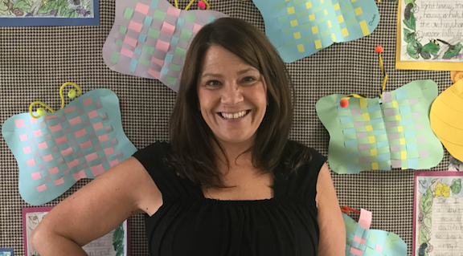

About Mrs. Brindisi

My name is Mrs. Brindisi! Welcome to my classroom website. I am currently a second grade teacher at Westmoreland Elementary School. I taught first grade for 20 years, and this is my 12th year in second grade. I went to Ilion High School and graduated from Cortland State University with a Masters degree in elementary education. I live in Whitesboro with my husband and 2 children. In my free time I enjoy golfing and swimming. My passion has always been educating children and helping them meet their potential.